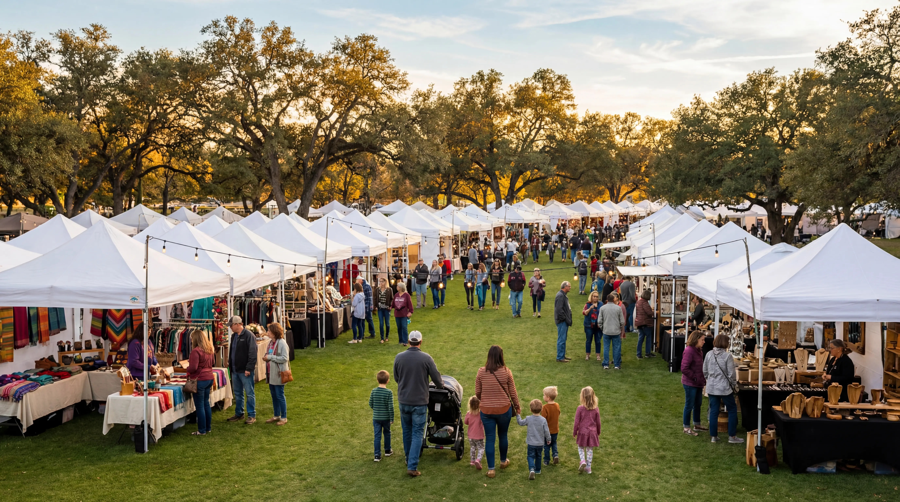
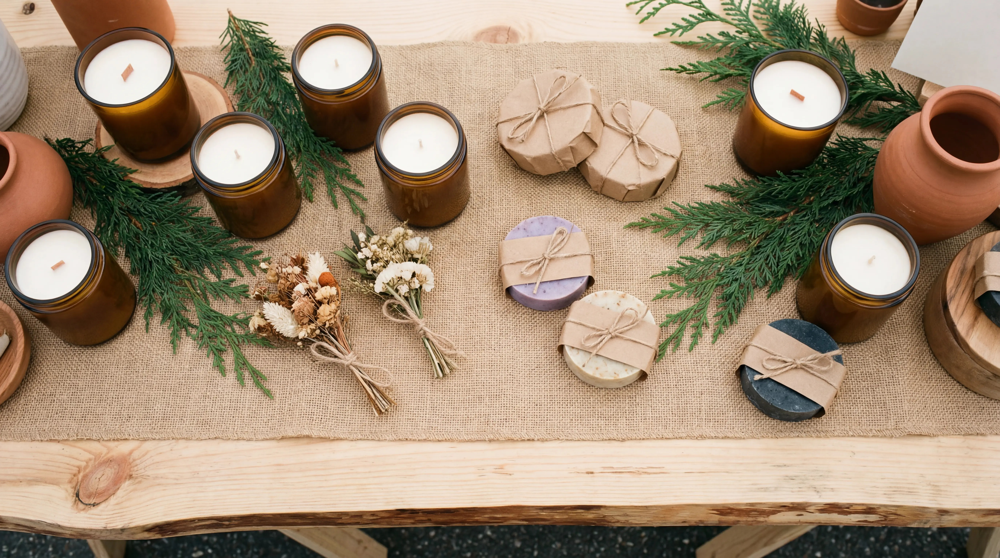

Austin, Georgetown & Manor, TX
Where Local Makers
Find Their People
Move Mountains Artisan Market is a community-centered pop-up market series running across three Austin-area venues every month. Dozens of local artisan vendors, live acoustic music, hands-on activities for kids, and the kind of Saturday morning that actually slows you down.

Local Artisans
Handcrafted by Real People, Sold by Their Makers
Every vendor at Move Mountains is a working artisan, not a reseller. You are talking to the person who baked the sourdough at 4am, the jeweler who shaped that ring by hand, and the candlemaker whose kitchen smells incredible.
From freeze-dried candy to original art prints, imported wines to handwoven crochet, the market brings together makers from across the greater Austin area who pour real craft into what they sell.
"Empowering local artisans. Multiple venues, dozens of makers, one community." Move Mountains Artisan Market
Three Venues, Monthly
A Market That Comes to Your Neighborhood
Because no single neighborhood owns community, Move Mountains rotates across three communities in the Austin metro. Easton Park on the first Sunday, Wolf Ranch on the first Thursday, and Whisper Valley on the third Sunday.
Each event runs 11am to 3pm and brings the full market experience to a different corner of the city, every single month.

Categories at the Market
-
Artisan Food & Baked Goods
Sourdough loaves, pastries, freeze-dried candy, specialty confections, and small-batch treats made fresh for market day.
-
Handmade Jewelry
Multiple jewelry makers offering one-of-a-kind earrings, rings, necklaces, and bracelets across a wide range of styles and metals.
-
Coffee & Specialty Beverages
Local roasters and beverage vendors to keep you fueled while you browse, from espresso pulls to cold brew to specialty teas.
-
Bath, Body & Wellness
Handcrafted soaps, candles, bath bombs, and wellness products made in small batches with natural ingredients.
-
Art, Home Decor & Wood Crafts
Original prints, paintings, hand-turned wood pieces, and decor items that look like they belong in a design magazine.
-
Apparel, Fiber Arts & Crochet
Custom clothing, crochet pieces, handwoven textiles, and fiber art from makers who treat thread as a medium.
-
Pet Products, Books & More
Dog-friendly events mean dog vendors too. Plus imported wines, local authors, and the rotating surprises that make every market different.

More Than Shopping
Live Music. Kids Corner. Monthly Raffle.
Every Move Mountains event includes live acoustic music, so there is always a soundtrack to your morning. Kids get their own corner with hands-on activities: pottery painting, plant stations, and craft stations that rotate each month.
Vendors donate prizes to a monthly raffle, giving every visitor a reason to stick around until the end. Photo scavenger hunts make the whole market an experience, not just a transaction.
Meet Our Musicians
A rotating roster of Austin-area acoustic, folk, and singer-songwriter talent plays every market day. Here are some of the artists you may catch behind the mic.
Aaron Cook
Instagram @aaroncantcookBrian Wolff
brianwolffmusic.comDani The Violinist
Instagram @dmcviolinJustHannah
justhannah.liveMike Kiddoo
mikekiddoo.comNick Adamo
nickadamo.netWant to perform?
Apply HereGiving Back
Monthly Non-Profit Spotlight
Every month, Move Mountains donates a vendor booth to a local non-profit organization. It is our way of using the market platform to amplify causes that matter to our community. Interested in being featured? Reach out to us.
"If you have faith as small as a mustard seed, you can say to this mountain, 'Move from here to there,' and it will move." Matthew 17:20, the inspiration behind the name
Our Story
Started in Manor. Built for the Whole City.
What began as the Manor Artisans Market in 2022 has grown into Move Mountains Artisan Market, a three-venue monthly series reaching thousands of Austin-area families each month. The mission is simple: give local makers a platform, give communities a reason to gather, and make every event feel like the best Saturday of the month.
Faith-inspired. Community-rooted. Artisan-powered.
Find Us Near You
Move Mountains runs monthly across three Austin-metro neighborhoods. Check the events page for exact upcoming dates.
Easton Park
Skyline Park
7604 Solari DrAustin, TX 78744
Whisper Valley
Discovery Center Exterior
9400 Petrichor BlvdManor, TX 78653
Wolf Ranch
Community Pavilion
101 River Overlook RdGeorgetown, TX 78628
Ready to Join the Market?
Whether you are a shopper planning your next visit or an artisan looking for your next booth, the market is open to everyone.
Our Partners
Sponsors & Community Partners
Move Mountains is supported by local businesses and community organizations who believe in what we are building. Interested in sponsoring a market? Contact us to learn about sponsorship opportunities.